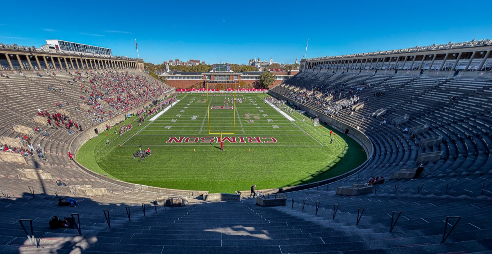
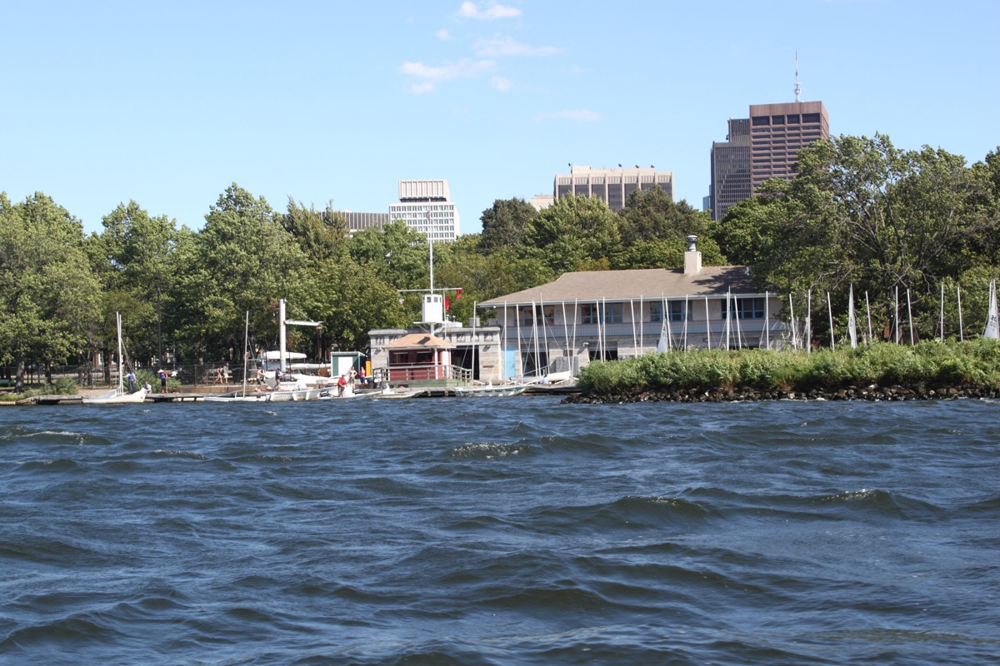
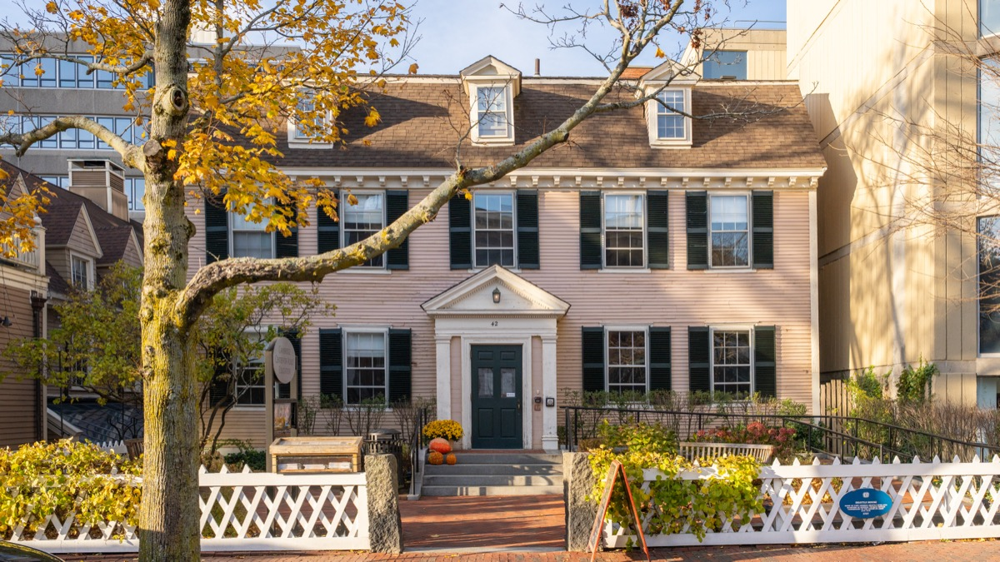

Every channel we've seen work for people who moved to Boston without a built-in crowd, with groups, addresses and T stops, plus a neighborhood table and a first-90-days plan. Still unpacking? Start with just moved to Boston.
The short answer
The 10 best ways to meet people in Boston
01
Why it's hard at first
Boston is transient: 35-plus colleges plus hospitals and biotech mean many people leave after two years, so aim for a wider circle than you think you need. It is reserved: nobody chats on the T, and friendliness is shown by showing up. And winter is long, so build a base by December.
02 · Sweat & outdoors
Run clubs, rec leagues and hobby communities
Free, weekly and built for strangers. Leagues put you on a team for two months.
November Project
Harvard Stadium, AllstonFree, Wed 6:30am

Free stadium-stair workouts with a "newbie" welcome every week. Show up three Wednesdays in a row and someone invites you to breakfast.
Heartbreak Hill Running Company runs
652 Tremont St, South EndFree
Free evening runs with split pace groups, nobody dropped, and a bar at the end. Skews 25 to 40 and heavy on recent arrivals.
Tracksmith Trackhouse runs
285 Newbury StFree
Group runs along the Charles for slightly more serious runners. Pick this for training partners rather than a party.
Slow AF Run Club and no-drop groups
Esplanade or Cambridge bankFree
JP, Somerville and Southie groups run at conversational pace and welcome walkers. The whole point is talking.
Social Boston Sports and Volo leagues
Fields & gyms citywide$60–100/season
Co-ed kickball, softball, volleyball, dodgeball. Sign up as a free agent and your whole team is also new; games end at a sponsor bar.
Community Boating on the Charles
21 David G. Mugar Way~$200–400/season

Unlimited sailing for a season plus free lessons taught by other members. The dock on a summer evening is a standing social scene.
Learn-to-row programs
Community Rowing, Brighton
A boat with seven strangers at 6am, moving in unison. Sessions run a few weeks and feed into recreational crews.
Boston Ski & Sports Club
Bus trips citywide
Ski bus trips to New Hampshire and Vermont, plus its own leagues. The winter answer to January through March.
Hiking and the outdoors
AMC, Blue Hills ReservationFree/low cost
The AMC Boston chapter runs beginner hikes most weekends, many car-free. A small-group hike is four hours of conversation.
04 · Volunteer
Volunteering: the most reliable channel nobody uses
The same 10 people every week, working on something together, with nothing to buy.
Community Servings kitchen shifts
179 Amory St, JPFree
Chop vegetables for medically tailored meals alongside 15 to 20 people for three hours. Book a recurring slot.
Rosie's Place
889 Harrison Ave, South EndFree
A sanctuary for poor and homeless women. Lunch and dinner shifts with a regular volunteer pool that mixes ages and neighborhoods.
Cradles to Crayons
155 N Beacon St, BrightonFree
Sort donated clothes and school supplies in two-hour shifts with a room full of other people in their 20s. Easiest first try.
05 · Learn
Classes and language exchanges
Cambridge Center for Adult Education
42 Brattle St$50–300

Cooking, pottery, languages, woodworking, since 1938. Pick a multi-week hands-on course, not a one-night workshop.
Language exchanges
Harvard Sq, Kendall, Back BayFree or a drink
Weekly Spanish, French, Mandarin and Japanese nights, mostly via Meetup. You don't need to be fluent; half the room is also new.
Cooking classes and studio memberships
BCAE, Mudflat Studio
A pottery membership means seeing the same people at the wheel at odd hours. Cooking classes are easy to attend alone.
06
Church, temple and mosque communities
Most large congregations run young-adult groups with weekly dinners and service projects. Trinity Church in Copley Square (Episcopal); the Paulist Center and Park Street Church at Park Street; Temple Israel and the Vilna Shul for young-adult Jewish programming; the Islamic Society of Boston Cultural Center in Roxbury Crossing, the largest mosque in New England. Not religious? Arlington Street Church and the Boston Ethical Society welcome the unsure.
07
Where you live matters
Your neighborhood decides whether the above is a ten-minute walk or a trip you stop making in November.
| Neighborhood | Who lives there | Best channels nearby |
|---|---|---|
| Allston / Brighton | Post-grads, musicians, cheapest roommates | November Project, Silhouette trivia, Cradles to Crayons |
| Somerville (Davis, Union) | Late 20s and 30s, settled young people | Burren trivia, BKB climbing, Mudflat pottery |
| Cambridge (Central, Inman, Porter) | Grad students, researchers, internationals | Language exchanges, CCAE classes, Central Rock |
| South End | Late 20s to 40s, professionals, dog owners | Heartbreak Hill runs, Rosie's Place, BCAE |
| South Boston | Post-college professionals in large numbers | Rec leagues, Broadway bars, the beach in summer |
| Fenway / Kenmore | Students and young professionals | Esplanade runs, Fenway, Lansdowne Street |
| Jamaica Plain | 30s, creative and community-minded | Community Servings, the Arboretum, Centre Street |
| Back Bay / Beacon Hill | Older, wealthier, fewer roommates | Tracksmith runs, Trident trivia, Community Boating |
| Seaport / Downtown | Finance and consulting, high turnover | ICA Thursdays, Row 34; expect to travel for the rest |
08
Your first 90 days: a plan
A casual friend takes about 50 shared hours, a close one about 200. Weekly beats one-off.
| When | Do this | Why |
|---|---|---|
| Week 1 | Pick an anchor weeknight activity and go once | Something on the calendar before the boxes are unpacked |
| Week 2 | Register as a free agent for the next rec league season | Locks in 6 to 8 weeks of the same people |
| Weeks 2–4 | Go to the anchor every week. Say yes to the after-thing | The bar or breakfast after is where friends are made |
| Week 4 | Book a recurring volunteer shift or a multi-week class | Your winter anchor |
| Weeks 5–8 | Invite one person to one thing outside the activity | The first move has to be yours |
| Week 8 | Host something tiny: three people, a board game, takeout | People who've been in your kitchen come back |
| Weeks 9–12 | Keep the two anchors; drop what isn't working | By now you know what fits |
| Day 90 | Count. Three people you could text on a Tuesday means it worked | Channels matter more than trying harder |
FAQ
How to make friends in Boston: common questions
Is it hard to make friends in Boston?
At first, yes. The city is reserved, transient and indoors all winter. But it is small and full of weekly activities. Show up to the same thing weekly for three months and it gets easier.
What is the best way to meet people in Boston in your 20s?
Recurring activities where strangers are expected: November Project, Heartbreak Hill runs, Social Boston Sports and Volo leagues, weekly pub trivia, climbing gyms and volunteering shifts.
Which Boston neighborhoods are best for meeting people?
Allston, Brighton, Somerville (Davis and Union Square), Cambridge (Central and Inman), the South End and Southie. Most roommates, run clubs, trivia nights and casual bars, all walkable.
How long does it take to make friends after moving to Boston?
Most people find months one to three lonely and months four to six fine. Casual friendship takes about 50 shared hours, close friendship about 200, so weekly activities beat one-off events.
How do I make friends in Boston in the winter?
Keep it indoors and weekly: climbing gyms, board games at Knight Moves, trivia, adult ed classes, Boston Ski and Sports Club trips, indoor rec leagues and volunteering shifts.
03 · Social & games
Trivia, board games, climbing and online
Something to do with your hands and a reason to talk.
Weekly pub trivia, same bar every week
The Burren, SomervilleFree to play
Tell the host you're alone and they'll put you on a team. Go to the same bar every week and by week four it's your team.
Board game night at Knight Moves
1402 Beacon St, BrooklineCover for open play
A board game café with over a thousand games where staff match solo visitors to tables that need a player.
A climbing gym membership
Central Rock Gym, Cambridge~$90/month
Bouldering is 30 seconds of climbing and five minutes of talking about the route. Go twice a week and you have a crew within a month.
Meetup groups
Citywide
Pick groups with a fixed weekly or monthly activity: a Blue Hills hike, a Thursday game night. A hike with 12 beats a bar with 60.
Bumble BFF
AppFree
A real user base here, mostly women in their 20s and 30s who moved for work or grad school. Use it for an activity partner, not a friend.
Coworking and work-from-home cafés
Workbar, CIC Cambridge
Workbar and CIC run member socials. Cheaper: work from one café the same two mornings a week; regulars notice regulars.